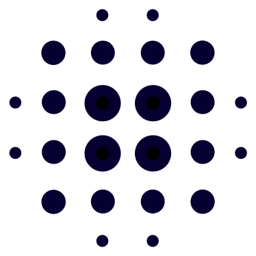

The Enhanced Vegetation Index measures how much living, photosynthesizing plant matter a patch of ground carries. It is computed from a single cloud-free Sentinel-2 scene and shown at the satellite's native 10 m resolution.
The highlighted area is HUC12 130202010102, "Headwaters Santa Fe River" — the 140.7 km² municipal watershed encompassing Nichols and McClure reservoirs. The dry corridor running down through Santa Fe and the forested headwaters at the crest are both in frame, which is the contrast the map is built to show.
The terrain is derived from the Copernicus GLO-30 elevation model. EVI is not corrected for terrain variation; north-facing slopes underrepresent the true value.
